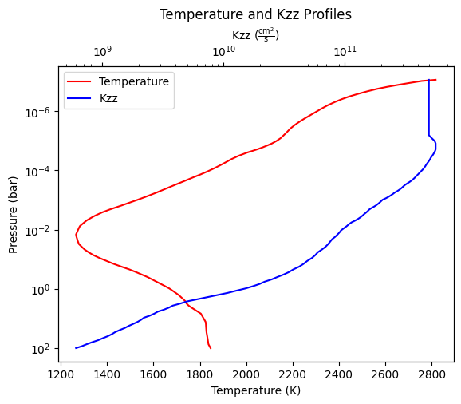
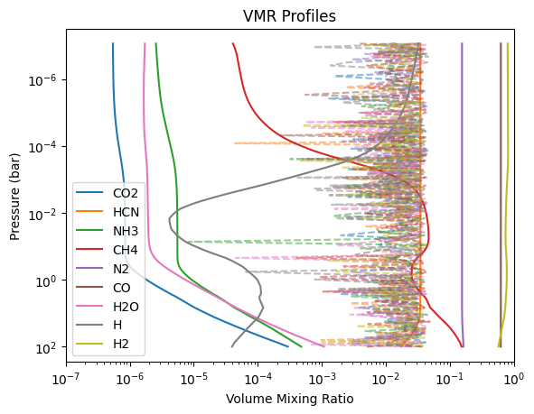
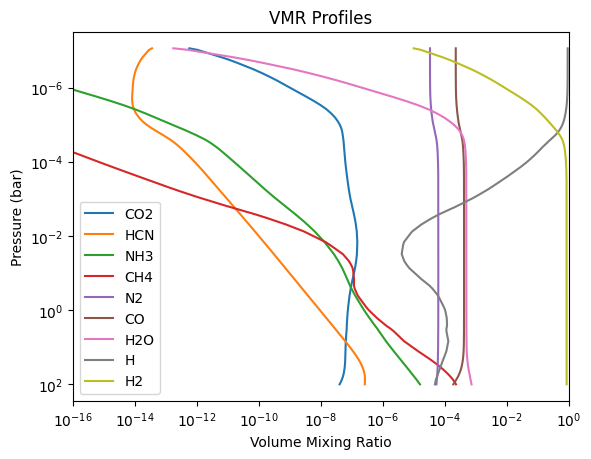
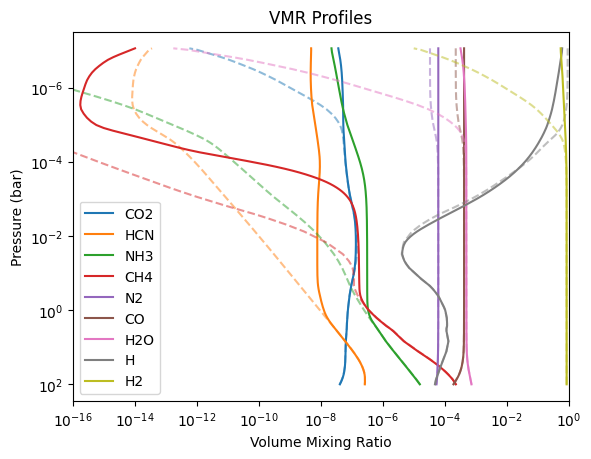
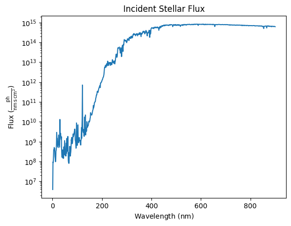
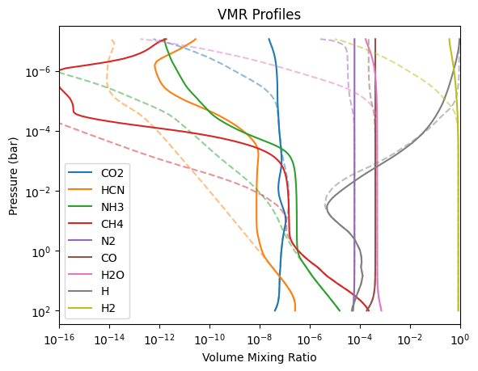

Getting Started with FRECKLL¶
-
If you want to use the command line interface, the Quickstart can be found here
-
The Google Colab version of this page can be found here
This guide is there to quickly get started on the using the freckll library. Here you will learn the basics:
- Loading in atmospheric data
- Loading in our network.
- Solving the atmosphere
- Plotting results
- Animating results
- Running from equilibrium
- Storing results
- Running with photochemistry.
Loading in Atmospheric Data¶
First thing we need is profiles to solve. FRECKLL makes use of astropy to units to represent data. This makes the library agnostic to units. Creating a custom profile is as simple as:
from astropy import units as u
import numpy as np
temperature = np.linspace(2000,10000, 100) << u.K
pressure = np.logspace(2,-5) << u.bar
You can use your own methods to load in the data as long as it is in the form of a Quantity with correct units. FRECKLL includes some helpful methods to load in data under the freckll.io.loader module. For example, we will load in the TP profile using the tp_profile_loader function.
Our csv file looks like this:
# Pressure(mbar), Temperature (K)
0.10002E+06 1846.3
86374. 1841.7
74509. 1837.4
63753. 1836.2
54482. 1834.9
46559. 1833.4
39787. 1831.9
34001. 1830.4
29020. 1828.9
24720. 1828.1
21047. 1827.5
17919. 1826.9
- Column 0 is Pressure in mbar
- Column 1 is temperature in K
We can load it in using the following tp_profile_loader function:
from freckll.io.loader import tp_profile_loader
pressure, temperature = tp_profile_loader(
filename="tpprofile.csv",
temperature_column=1, temperature_unit=u.K,
pressure_column=0, pressure_unit=u.mbar, comments="#")
print(pressure.shape)
(130,)
Additionally it would be nice to load in a \(K_{zz}\) profile as well. We can use a loader to do this as well.
from freckll.io.loader import kzz_profile_loader
_pressure, kzz = kzz_profile_loader(
filename="kzz.csv", kzz_column=1,pressure_column=0, kzz_unit=u.cm**2/u.s,
pressure_unit=u.mbar, comments="#"
)
print(kzz.shape)
(28369,)
Sometimes different profiles lie on different pressure grids, in this case \(K_{zz}\) is in a much finer grid. We can get around this by interpolating the points to the TP profile grid. (Or vice-versa if you desire):
from freckll.utils import interpolate_pressure
kzz = interpolate_pressure(
_pressure, kzz, pressure
)
We can plot both profiles using the freckll.plot module.
from freckll.plot import plot_tp_and_kzz
import matplotlib.pyplot as plt
fig,ax = plt.subplots()
plot_tp_and_kzz(pressure, temperature, kzz, ax)
plt.show()

Loading in the Network¶
The next step is to load in the network. FRECKLL includes two Venot 2020 networks built in. The first is a full chemical network that includes photolysis and the second is a reduced network that does not include photolysis.
You can also load in your own network but this will be covered in a different tutorial.
The default_network_loader allows for two arguments:
venot-methanol-2020-reduced- This is the reduced network that does not include photolysis.venot-methanol-2020- This is the full network that includes photolysis.
We can use the loader to load in the reduced network:
from freckll.io.loader import default_network_loader
network = default_network_loader("venot-methanol-2020-reduced")
We can inspect the species in the network:
[C2H3O2 (CH3OCO),
HO2 (OOH),
C2H3O (CH2CHO),
C2H3O (CH3CO),
CNO (NCO),
CH3O (CH3O),
O2 (O2),
CHO2 (CO2H),
CHNO (HOCN),
C2H5 (C2H5),
CH3O (CH2OH),
C2H6 (C2H6),
C2H3 (C2H3),
C2H2O (CH2CO),
HN2 (NNH),
CH2N (H2CN),
CH4O (CH3OH),
CN (CN),
CH2 (1CH2),
CHNO (HNCO),
O (O3P),
C2H4 (C2H4),
CH2 (3CH2),
CHO (HCO),
C2H2 (C2H2),
CH2O (H2CO),
H2N (NH2),
CO2 (CO2),
HO (OH),
CH3 (CH3),
CHN (HCN),
H3N (NH3),
CH4 (CH4),
N2 (N2),
CO (CO),
H2O (H2O),
H (H),
He (He),
H2 (H2),
H2N2 (N2H2),
H3N2 (N2H3),
CH2N (HCNH),
CH2O2 (HOCHO),
CH3O2 (HOCH2O),
H2O (H2Oc[SpeciesState.LIQUID]),
CH4 (CH4c[SpeciesState.LIQUID]),
H3N (NH3c[SpeciesState.LIQUID])]
The SpeciesFormula is a class that contains a lot of information about a particular . It includes the following attributes:
composition- Number of atomsmass- Mass of the species in amustate- State of the species (gas, solid, liquid)
species = network.species[0]
print(f"Species name: {species}")
print(species.composition())
print(f"Mass {species.mass}")
print(f"Charge {species.charge}")
print(f"State: {species.state}")
print(f"Diffusion Volume: {species.diffusion_volume}")
Species name: CH3OCO
Element Count Relative mass Fraction %
C 2 24.021480 40.6840
H 3 3.023823 5.1213
O 2 31.998810 54.1948
Mass 59.044113
Charge 0
State: SpeciesState.GAS
Diffusion Volume: 50.95
Running reactions¶
We can solve for reactions given a set of conditions, we will use our tp-profile and a random mixing ratio to do this:
vmr = np.random.rand(len(network.species), len(pressure))
vmr = vmr / np.sum(vmr, axis=0)
reactions = network.compute_reactions(vmr, temperature, pressure)
reactions
[CH2CHO -> CH3CO (1.36e+08) (['decomposition']),
CH3CO -> CH2CHO (4.84e+07) (['decomposition', 'inverted']),
CH2CHO -> H + CH2CO (2.68e+09) (['decomposition']),
H + CH2CO -> CH2CHO (1.84e-11) (['decomposition', 'inverted']),
NNH -> N2 + H (3.00e+08) (['decomposition']),
...]
Here each reaction is described by its reactants, products, reaction_rate and dens_krate. Where dens_krate is the reaction rate multiplied by the number density of the reactant species.
print(reactions[0])
print("Reaction rate:",reactions[0].reaction_rate[:10], "1/s")
print("Reaction rate:", reactions[0].dens_krate[:10], "1/cm3/s")
CH2CHO -> CH3CO (1.36e+08) (['decomposition'])
Reaction rate: [27647229.87948201 26777410.68236617 25985321.23606332 25767838.0996988
25533968.19290701 25266348.68916494 25001102.69660493 24738213.35402364
24477663.88574786 24339655.15159737] 1/s
Reaction rate: [3.81634324e+26 2.86330634e+26 2.73774059e+25 3.37740125e+25
7.01415174e+25 8.90572305e+25 1.81022065e+25 2.07255692e+25
5.89947951e+24 9.60588730e+25] 1/cm3/s
If we want to look for specific production/loss reactions for a specific species, we can add the with_production_loss argument.
reactions, (production, loss) = network.compute_reactions(vmr, temperature, pressure, with_production_loss=True)
print(production["CH4"])
[CH3 + H -> CH4 (2.63e-13) (['k0', 'kinf', 'falloff', 'Troe', 'reaction', 'inverted']), H + CH3 -> CH4 (1.38e-11) (['k0', 'kinf', 'falloff', 'Troe', 'reaction']), HOCHO + CH3 -> CH4 + CO + OH (4.91e-12) (['corps', 'reaction', 'many body']), CH3 + H2 -> CH4 + H (7.77e-13) (['corps', 'reaction', 'many body', 'inverted']), CH3 + CH3 -> CH4 + 1CH2 (1.51e-13) (['corps', 'reaction', 'many body', 'inverted']), C2H3 + CH3 -> CH4 + C2H2 (6.48e-13) (['corps', 'reaction', 'many body']), C2H4 + CH3 -> CH4 + C2H3 (1.40e-14) (['corps', 'reaction', 'many body']), C2H5 + CH3 -> C2H4 + CH4 (1.83e-12) (['corps', 'reaction', 'many body']), C2H6 + CH3 -> C2H5 + CH4 (3.96e-12) (['corps', 'reaction', 'many body']), CH3 + OH -> O3P + CH4 (4.62e-13) (['corps', 'reaction', 'many body', 'inverted']), CH3 + H2O -> OH + CH4 (5.34e-14) (['corps', 'reaction', 'many body', 'inverted']), HCO + CH3 -> CH4 + CO (1.99e-10) (['corps', 'reaction', 'many body']), CH3 + H2CO -> HCO + CH4 (1.04e-11) (['corps', 'reaction', 'many body']), CH3 + OOH -> O2 + CH4 (5.29e-13) (['corps', 'reaction', 'many body', 'inverted']), N2H2 + CH3 -> NNH + CH4 (1.48e-12) (['corps', 'reaction', 'many body']), N2H3 + CH3 -> N2H2 + CH4 (1.03e-12) (['corps', 'reaction', 'many body']), CH3 + NH3 -> CH4 + NH2 (3.93e-14) (['corps', 'reaction', 'many body', 'inverted']), HOCN + CH3 -> NCO + CH4 (2.96e-13) (['corps', 'reaction', 'many body']), H2CN + CH3 -> HCN + CH4 (2.26e-12) (['corps', 'reaction', 'many body']), HCNH + CH3 -> HCN + CH4 (2.29e-12) (['corps', 'reaction', 'many body']), HCN + CH3 -> CN + CH4 (1.02e-13) (['corps', 'reaction', 'many body', 'inverted']), HNCO + CH3 -> NCO + CH4 (1.20e-14) (['corps', 'reaction', 'many body', 'inverted']), CH3OH + CH3 -> CH2OH + CH4 (5.79e-13) (['corps', 'reaction', 'many body']), CH3OH + CH3 -> CH3O + CH4 (4.93e-14) (['corps', 'reaction', 'many body']), CH3O + CH3 -> H2CO + CH4 (1.99e-11) (['corps', 'reaction', 'many body'])]
Additionally each reaction includes a tag that describes some thing about the reaction. For example, we can find only reactions that use the Troe falloff using the find_tagged_reactions function.
[C2H3 -> C2H2 + H (2.44e+07) (['k0', 'kinf', 'falloff', 'Troe', 'decomposition']),
C2H2 + H -> C2H3 (7.59e-13) (['k0', 'kinf', 'falloff', 'Troe', 'decomposition', 'inverted']),
C2H5 -> C2H4 + H (5.36e+07) (['k0', 'kinf', 'falloff', 'Troe', 'decomposition']),
C2H4 + H -> C2H5 (3.68e-12) (['k0', 'kinf', 'falloff', 'Troe', 'decomposition', 'inverted']),
CO2H -> CO + OH (4.34e+08) (['k0', 'kinf', 'falloff', 'Troe', 'decomposition']),
CO + OH -> CO2H (3.81e-14) (['k0', 'kinf', 'falloff', 'Troe', 'decomposition', 'inverted']),
CO2H -> CO2 + H (6.56e+07) (['k0', 'kinf', 'falloff', 'Troe', 'decomposition']),
CO2 + H -> CO2H (1.62e-15) (['k0', 'kinf', 'falloff', 'Troe', 'decomposition', 'inverted']),
CH3OH -> CH3 + OH (1.06e+04) (['k0', 'kinf', 'falloff', 'Troe', 'decomposition']),
CH3 + OH -> CH3OH (4.54e-12) (['k0', 'kinf', 'falloff', 'Troe', 'decomposition', 'inverted']),
CH3OH -> 1CH2 + H2O (2.58e+03) (['k0', 'kinf', 'falloff', 'Troe', 'decomposition']),
1CH2 + H2O -> CH3OH (1.72e-12) (['k0', 'kinf', 'falloff', 'Troe', 'decomposition', 'inverted']),
CH3OH -> CH2OH + H (6.40e+01) (['k0', 'kinf', 'falloff', 'Troe', 'decomposition']),
CH2OH + H -> CH3OH (6.83e-13) (['k0', 'kinf', 'falloff', 'Troe', 'decomposition', 'inverted']),
CH3O -> H2CO + H (7.83e+07) (['k0', 'kinf', 'falloff', 'Troe', 'decomposition']),
H2CO + H -> CH3O (3.55e-15) (['k0', 'kinf', 'falloff', 'Troe', 'decomposition', 'inverted']),
CH4 -> CH3 + H (5.36e+00) (['k0', 'kinf', 'falloff', 'Troe', 'reaction']),
CH3 + H -> CH4 (2.63e-13) (['k0', 'kinf', 'falloff', 'Troe', 'reaction', 'inverted']),
O2 + H -> OOH (1.19e-14) (['k0', 'kinf', 'falloff', 'Troe', 'reaction']),
OOH -> O2 + H (1.16e+04) (['k0', 'kinf', 'falloff', 'Troe', 'reaction', 'inverted']),
CH3 + CH3 -> C2H6 (3.47e-12) (['k0', 'kinf', 'falloff', 'Troe', 'reaction']),
C2H6 -> CH3 + CH3 (1.12e+05) (['k0', 'kinf', 'falloff', 'Troe', 'reaction', 'inverted']),
H + CH3 -> CH4 (1.38e-11) (['k0', 'kinf', 'falloff', 'Troe', 'reaction']),
CH4 -> H + CH3 (2.39e+02) (['k0', 'kinf', 'falloff', 'Troe', 'reaction', 'inverted']),
CO + CH3 -> CH3CO (1.27e-15) (['k0', 'kinf', 'falloff', 'Troe', 'reaction']),
CH3CO -> CO + CH3 (1.37e+09) (['k0', 'kinf', 'falloff', 'Troe', 'reaction', 'inverted']),
O2 + H -> OOH (1.95e-13) (['k0', 'kinf', 'falloff', 'Troe', 'reaction']),
OOH -> O2 + H (1.88e+05) (['k0', 'kinf', 'falloff', 'Troe', 'reaction', 'inverted']),
H2CO + H -> CH2OH (8.17e-14) (['k0', 'kinf', 'falloff', 'Troe', 'reaction']),
CH2OH -> H2CO + H (1.96e+07) (['k0', 'kinf', 'falloff', 'Troe', 'reaction', 'inverted'])]
Or "Troe" and "decomposition":
[CH2CHO -> CH3CO (1.36e+08) (['decomposition']),
CH3CO -> CH2CHO (4.84e+07) (['decomposition', 'inverted']),
CH2CHO -> H + CH2CO (2.68e+09) (['decomposition']),
H + CH2CO -> CH2CHO (1.84e-11) (['decomposition', 'inverted']),
NNH -> N2 + H (3.00e+08) (['decomposition']),
N2 + H -> NNH (2.06e-16) (['decomposition', 'inverted']),
HCNH -> HCN + H (1.82e+07) (['decomposition']),
HCN + H -> HCNH (1.40e-14) (['decomposition', 'inverted']),
H2CN -> HCN + H (2.45e+05) (['decomposition']),
...
C2H3 -> C2H2 + H (2.44e+07) (['k0', 'kinf', 'falloff', 'Troe', 'decomposition']),
C2H2 + H -> C2H3 (7.59e-13) (['k0', 'kinf', 'falloff', 'Troe', 'decomposition', 'inverted']),
C2H5 -> C2H4 + H (5.36e+07) (['k0', 'kinf', 'falloff', 'Troe', 'decomposition']),
C2H4 + H -> C2H5 (3.68e-12) (['k0', 'kinf', 'falloff', 'Troe', 'decomposition', 'inverted']),
CO2H -> CO + OH (4.34e+08) (['k0', 'kinf', 'falloff', 'Troe', 'decomposition']),
CO + OH -> CO2H (3.81e-14) (['k0', 'kinf', 'falloff', 'Troe', 'decomposition', 'inverted']),
CO2H -> CO2 + H (6.56e+07) (['k0', 'kinf', 'falloff', 'Troe', 'decomposition']),
CO2 + H -> CO2H (1.62e-15) (['k0', 'kinf', 'falloff', 'Troe', 'decomposition', 'inverted']),
...]
For performance reactions can also be precompiled to a specific temperature/pressure profile. Compare this:
18.9 ms ± 415 μs per loop (mean ± std. dev. of 7 runs, 100 loops each)
With this:
8.97 ms ± 238 μs per loop (mean ± std. dev. of 7 runs, 100 loops each)
A 50% decrease in runtime!
Solving the atmosphere¶
We now want to solve the atmosphere. We require a solver to accomplish this. FRECKLL supports two solvers:
- VODE
- Rosenbrock
For the purpose of this tutorial we will use the Rosenbrock solver. We can import our solver from freckll.solver and create a solver object. The solver object requires the following arguments:
network- The network objectphotochemistry- A photochemistry object. This is not required if you are not using photochemistry. (We will cover this later).
Before we can solve the atmosphere we need to setup the conditions of the atmosphere. This includes the temperature, vmr, planetary parameters and so on. This can be done using the set_system_parameters method
rosen.set_system_parameters(
temperature=temperature,
pressure=pressure,
kzz=kzz,
planet_radius=1.37 * u.Rjup,
planet_mass=0.87 << u.Mjup,
)
The solver will automatically compile the networks for us so there is no need to precompile them beforehand.
Finally we now solve our atmosphere. We will use a randomized initial mixing ratio.
This should take no more than 20-30 seconds to run. The solver will return a SolverResult dictionary that contains the results of the simulation.
This includes the following attributes:
success- A boolean that indicates if the simulation was successfultimes- The time points of the simulationvmr- The volume mixing ratio of the species at each time pointinitial_vmr- The initial volume mixing ratio of the speciestemperature- The temperature of the atmospherepressure- The pressure of the atmospheredensity- The density of the atmospherekzz- The eddy diffusion coefficientplanet- Planet parametersspecies- The species in the network
vmr = np.random.rand(len(network.species), len(pressure))
vmr = vmr / np.sum(vmr, axis=0, keepdims=True)
result = rosen.solve(
vmr=vmr,
t_span=[0, 1e16],
enable_diffusion=False,
maxiter=1000,
)
print('Success:',result["success"])
Success: True
We have lots of plotting options available for us. Plotting the initial and steady state:
from freckll.plot import plot_vmr
fig, ax = plt.subplots()
plot_vmr(result["vmr"][-1], result["pressure"], result["species"], initial_vmr=result["initial_vmr"],
xlims=(1e-7, 1e0),
ax=ax)
plt.show()

The dashed lines are our initial conditions and the solid are the final solved state. We can also animate the results as well:
%%capture
from freckll.plot import animate_vmr
fig, ax = plt.subplots()
anim = animate_vmr(
vmrs=result["vmr"],
times=result["times"],
species=result["species"],
pressure=result["pressure"],
initial_vmr=result["initial_vmr"],
xlims=(1e-7, 1e0),
blit=True, repeat=False,
interval=50,
)
anim.save("randomvmr.mp4", fps=30, dpi=200, writer="ffmpeg")
Running from Equilibrium¶
Of course we may want to start from an atmosphere of given metallicity and molecular ratios. You can supply your own initial VMR as along as the first dimension maps
to each species in network.species. The solver will then run from this initial VMR to the final state.
FRECKLL includes the equilibrium code ACE which is installed either from:
or
or you can install it manually using:
Under freckll.ace you can use equil_chemistry_ace and abundance ratios to solve for the equilibrium state of the atmosphere.
from freckll.ace import equil_chemistry_ace
equil_vmr = equil_chemistry_ace(
temperature=temperature,
pressure=pressure,
composition=network.species,
elements=["H", "He", "C", "N","O"],
abundances=[12, 10.93, 8.39, 7.86, 8.73],
)
fig, ax = plt.subplots()
plot_vmr(
equil_vmr,
pressure,
network.species,
ax=ax,
)
plt.show()

Lets solve using this mixing ratio instead!
result_equil = rosen.solve(
vmr=equil_vmr,
t_span=[0, 1e16],
enable_diffusion=False,
maxiter=1000,
)
print('Success:',result_equil["success"])
Success: True
Now lets plot the initial and final mixing ratios:
fig, ax = plt.subplots()
plot_vmr(result_equil["vmr"][-1], result_equil["pressure"], result_equil["species"], initial_vmr=result_equil["initial_vmr"],
xlims=(1e-16, 1e0),
ax=ax)
plt.show()

Nice! Lets also animate the result!
%%capture
anim_equil = animate_vmr(
vmrs=result_equil["vmr"],
times=result_equil["times"],
species=result_equil["species"],
pressure=result_equil["pressure"],
initial_vmr=result_equil["initial_vmr"],
xlims=(1e-16, 1e0),
blit=True, repeat=False,
interval=50,
)
anim_equil.save("equil_vmr.mp4", fps=30, dpi=200, writer="ffmpeg")
Storing and Reading Results¶
We can store the output of a solution to HDF5 format using the freckll.io.output modules. We can simply takes the result from the solver and run this function:
from freckll.io.output import write_solution_h5py
write_solution_h5py(
solution=result_equil,
filename="solution_equil.h5",
overwrite=True,
)
If we want to restore it, it is as easy as running the read function:
from freckll.io.output import read_h5py_solution
solution_h5 = read_h5py_solution("solution_equil.h5")
And we can replot it to prove it is the same:
fig, ax = plt.subplots()
plot_vmr(solution_h5["vmr"][-1], solution_h5["pressure"], solution_h5["species"], initial_vmr=solution_h5["initial_vmr"],
xlims=(1e-16, 1e0),
ax=ax)
plt.show()
Running with Photochemistry¶
For the photochemistry case we will need to use the full network instead. We can load it in using the default_network_loader function:
We will also need to load in the photochemistry and actinic flux for the star. This is easily accomplished using the loader modules. We will load the Venot 2020 photochemistry and the actinic flux for HD 209458 star
from freckll.io.loader import default_photonetwork_loader, default_stellar_spectra_loader
photo_network = default_photonetwork_loader(full_network.species)
stellar_spectra = default_stellar_spectra_loader("hd209458")
Lets plot the stellar flux and see what it looks like!
from freckll.plot import plot_stellar_flux
fig, ax = plt.subplots()
plot_stellar_flux(stellar_spectra.flux, stellar_spectra.wavelength, ax=ax)
plt.show()

We can now build a new solver with the photochemistry included. The photochemistry object is passed to the solver as an argument.
Now we can setup the photoparameters and the system parameters like so:
photo_network.set_spectra(stellar_spectra, distance=0.047 << u.AU, albedo=0.0)
rosenbrock_photo.set_system_parameters(
temperature=temperature,
pressure=pressure,
kzz=kzz,
planet_radius=1.37 * u.Rjup,
planet_mass=0.87 << u.Mjup,
)
Lets generate our new equilibrium state:
vmr_photo_equil = equil_chemistry_ace(
temperature=temperature,
pressure=pressure,
composition=full_network.species,
elements=["H", "He", "C", "N","O"],
abundances=[12, 10.93, 8.39, 7.86, 8.73],
)
Now let us solve! This will take a little longer ~ 40 seconds to a minute:
result_photo_equil = rosenbrock_photo.solve(
vmr=vmr_photo_equil,
t_span=[0, 1e16],
enable_diffusion=False,
maxiter=1000,
)
print('Success:',result_photo_equil["success"])
/Users/ahmed/Documents/repos/FRECKLL/.venv/lib/python3.12/site-packages/astropy/units/quantity.py:658: RuntimeWarning: overflow encountered in exp
result = super().__array_ufunc__(function, method, *arrays, **kwargs)
/Users/ahmed/Documents/repos/FRECKLL/.venv/lib/python3.12/site-packages/astropy/units/quantity.py:658: RuntimeWarning: invalid value encountered in multiply
result = super().__array_ufunc__(function, method, *arrays, **kwargs)
/Users/ahmed/Documents/repos/FRECKLL/.venv/lib/python3.12/site-packages/astropy/units/quantity.py:658: RuntimeWarning: overflow encountered in multiply
result = super().__array_ufunc__(function, method, *arrays, **kwargs)
Success: True
Lets plot the results!
fig, ax = plt.subplots()
plot_vmr(result_photo_equil["vmr"][-1], result_photo_equil["pressure"], result_photo_equil["species"], initial_vmr=result_photo_equil["initial_vmr"],
xlims=(1e-16, 1e0),
ax=ax)
plt.show()

And lets animate it!
%%capture
anim_photo_equil = animate_vmr(
vmrs=result_photo_equil["vmr"],
times=result_photo_equil["times"],
species=result_photo_equil["species"],
pressure=result_photo_equil["pressure"],
initial_vmr=result_photo_equil["initial_vmr"],
xlims=(1e-16, 1e0),
blit=True, repeat=False,
interval=50,
)
anim_photo_equil.save("photo_equil_vmr.mp4", fps=30, dpi=200, writer="ffmpeg")
Thats all there is to it! Try it and see what you can solve!